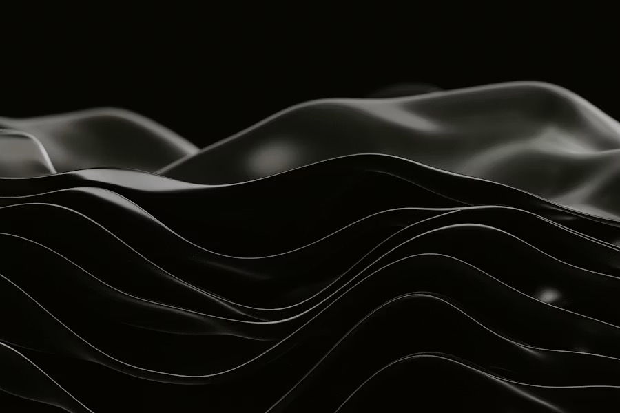

Rispondi a 11 domande sul tuo corpo e riceverai un report personalizzato con l'analisi del tuo inestetismo, l'approccio più indicato per te e una stima orientativa del percorso.
Al termine potrai condividere il tuo profilo con la tua professionista per iniziare subito il check-up.
Meno di 60 secondi — poi pensiamo a tutto noi.
Non troverai prezzi qui — ogni percorso è diverso e ogni centro ha le sue soluzioni. Durante il check-up riceverai un preventivo personalizzato, senza nessun obbligo di acquisto.
Puoi ascoltare, fare domande e decidere con calma se e come procedere.
Un piccolo favore: dopo il check-up, di' alla tua professionista com'è andata — il suo obiettivo è che tu sia davvero soddisfatta del percorso.